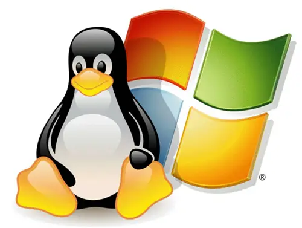

Um sistema operacional (SO) é um software fundamental que gerencia o hardware e os recursos de um computador, além de fornecer serviços essenciais para que outros programas possam funcionar. Ele atua como uma ponte entre o usuário e o hardware do computador, facilitando a execução de tarefas e garantindo que os recursos sejam utilizados de forma eficiente. Funções principais de um sistema operacional: Gerenciamento de processos: controla os programas em execução , aloca tempo de processamento da CPU e garante que eles sejam executados de forma ordenada. Gerenciamento de Memória: Organiza a memória RAM, garantindo que os aplicativos em execução tenham o espaço necessário para funcionar. Gerenciamento de Armazenamento: Controla como os dados, são armazenamento e acessados no disco rígido ou em outros dispositivos de armazenamento. Gerenciamento de Dispositivos: Coordena a comunicação entre o computador e seus periféricos, como teclado, mouse, impressoras e outros. Interface com o Usuário: Oferece uma interface gráfica (GUI) ou linha de comando (CLI) para que o usuário interaja com o sistema. Exemplos de sistemas operacionais: Windows (Microsoft) Linux (ex.: Ubuntu, Fedora, Debian) macOS (Apple) Android e iOS (para dispositivos móveis) Os sistemas operacionais são indispensáveis para o funcionamento de qualquer dispositivos, seja ele um computador, smartphone ou até mesmo um eletrodoméstico moderno.

Com livre acesso ao código fonte e a ajuda de desenvolvedores do mundo todo, o objetivo é aperfeiçoar programas de acordo com as necessidades de seus usuários. Entre os exemplos mais comuns, podemos citar o Linux, Firefox, LibreOffice, Audacity e o WordPress Com livre acesso ao código fonte e a ajuda de desenvolvedores do mundo todo, o objetivo é aperfeiçoar programas de acordo com as necessidades de seus usuários.

Um sistema proprietário é projetado com uma arquitetura fechada e implementado em um ecossistema fechado por um único fornecedor. Significa que você deve adquirir o hardware, software, suporte e quaisquer outros acessórios ou complementos do mesmo fornecedor de tecnologia.

São os programas encarregados de fazer a comunicação entre o computador, que só entende linguagem de máquina, e o usuário, sendo a base em que outros softwares, como os de aplicação e os de programação irão rodar. Ou seja, são plataformas para fazer funcionar outros softwares

são os programas utilizados nos dispositivos que permitem ao usuário executar uma série de tarefas nas mais diversas áreas de atividade

Na verdade, todo aplicativo é um software, mas nem todo software é aplicativo. O software é um termo mais amplo que engloba todos os tipos de programas, enquanto os aplicativos são um tipo específico de programa projetado para executar uma tarefa específica em um dispositivo ou sistema operacional
 Visual Studio, Eclipse, IntelliJ IDEA, Sublime Text
Visual Studio, Eclipse, IntelliJ IDEA, Sublime Text